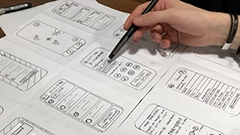

Objectifs de carrière : Une vision claire pour l'avenir
Court terme : Entrer dans le monde professionnel
Dans les mois qui suivent l'obtention de son diplôme, notre aspirante vise à décrocher un poste de développeur front-end junior. Elle se concentre sur le perfectionnement de ses compétences en JavaScript, HTML, CSS, et frameworks tels que React ou Vue.js.
Moyen terme : Vers l'expertise
Au cours des 2 à 5 prochaines années, elle ambitionne de devenir développeur front-end confirmé, avec une spécialisation en UI/UX design. Son objectif est de contribuer à des projets d'envergure et de travailler sur des applications web complexes.
Long terme : Une carrière florissante
À plus long terme, entre 5 et 10 ans, elle envisage d'évoluer vers un rôle de développeur front-end senior ou de consultant en conception web. Une spécialisation dans l'accessibilité web ou le développement mobile pourrait également être envisagée.
Portrait d'une aspirante développeuse front-end : Un parcours du marketing au code
Aujourd'hui, nous mettons en lumière une aspirante développeuse front-end en reconversion après une brillante carrière en marketing numérique. Après plusieurs années dédiées à sa famille, elle cherche désormais une carrière offrant plus de flexibilité et un apprentissage continu.
Réputée pour ses compétences analytiques et sa précision, elle excelle dans l'évaluation des options et la prise de décisions réfléchies. Son caractère introverti en fait une collaboratrice fiable, préférant un rôle de soutien mais capable de prendre les commandes si nécessaire.
À court terme, son objectif est d'obtenir un poste de développeuse front-end junior, afin de perfectionner ses compétences en JavaScript, HTML, CSS et frameworks populaires comme React et Vue.js. À moyen terme, elle aspire à devenir développeuse confirmée avec une spécialisation en UI/UX design, contribuant à des applications web complexes. À long terme, elle envisage d'évoluer vers un rôle de développeuse senior ou de consultante en conception web, avec une éventuelle spécialisation en accessibilité web ou développement mobile.
Parcours professionnel : Projets et compétences
Logiciels de prédilection
Elle maîtrise Visual Studio Code, Git/GitHub, Adobe XD, Figma, ainsi que des outils de marketing numérique comme Google Analytics et SEMrush.
Projets marquants
Elle a déjà créé des sites web réactifs pour des petites entreprises locales et développé une application web de gestion de tâches avec Vue.js.
Projet phare : Un e-commerce réussi
Parmi ses réalisations, elle est particulièrement fière du développement d'un site e-commerce pour une boutique locale. Les défis rencontrés, tels que l'intégration d'un système de paiement sécurisé et la gestion des stocks en temps réel, ont été surmontés avec brio.
Révélations sur les attentes salariales
Quel salaire pour une développeuse front-end débutante?
Après avoir effectué des recherches approfondies, notre talent émergent vise un salaire annuel compris entre 50 000 et 60 000 CAD. Son expérience en marketing numérique, combinée à ses nouvelles compétences en développement, justifie ses attentes dans la fourchette supérieure.
Compétences et qualités additionnelles

Certifications et formations
Notre étudiante a obtenu une certification Google Analytics et suivi une formation en UI/UX design, renforçant ainsi son profil technique.
Savoirs-être : Des atouts indéniables
Ponctuelle, organisée et capable de travailler sous pression, elle possède d'excellentes compétences en service à la clientèle et un esprit d'équipe. Ces qualités font d'elle une candidate idéale pour toute équipe de développement.
Portrait d'une personnalité singulière
Qualités et défauts : Ce que disent les autres
Introspective et analytique, notre étudiante est reconnue pour sa capacité à évaluer les options avec précision. Sérieuse et prudente, elle préfère réfléchir avant d'agir, garantissant des décisions mûrement réfléchies. Cependant, son penchant pour la critique peut parfois être perçu comme un défaut, même si cela contribue à des analyses rigoureuses et logiques.
Travail en équipe : Une approche réfléchie
Préférant un rôle de soutien, elle excelle dans les environnements de travail structurés. À l'aise avec le travail à distance via Discord, elle sait aussi s'adapter aux espaces ouverts de bureau.
Motivation : Un nouvel horizon professionnel
Sa reconversion vers le développement web est motivée par le désir d'une carrière plus flexible et d'un apprentissage continu. La passion pour les technologies web et la création de solutions innovantes alimente sa détermination.
Loisirs et intérêts : Au-delà du code
En dehors du travail, elle apprécie la lecture, la peinture et les projets DIY. Toujours en quête de nouvelles connaissances, elle est passionnée par les technologies émergentes.
Étoile montante du code
Parcours :
Chloé vient de terminer ses études en développement web et a déjà commencé à travailler sur plusieurs projets innovants. Elle est passionnée par les technologies modernes et est déterminée à se faire une place dans l'industrie du développement front-end.